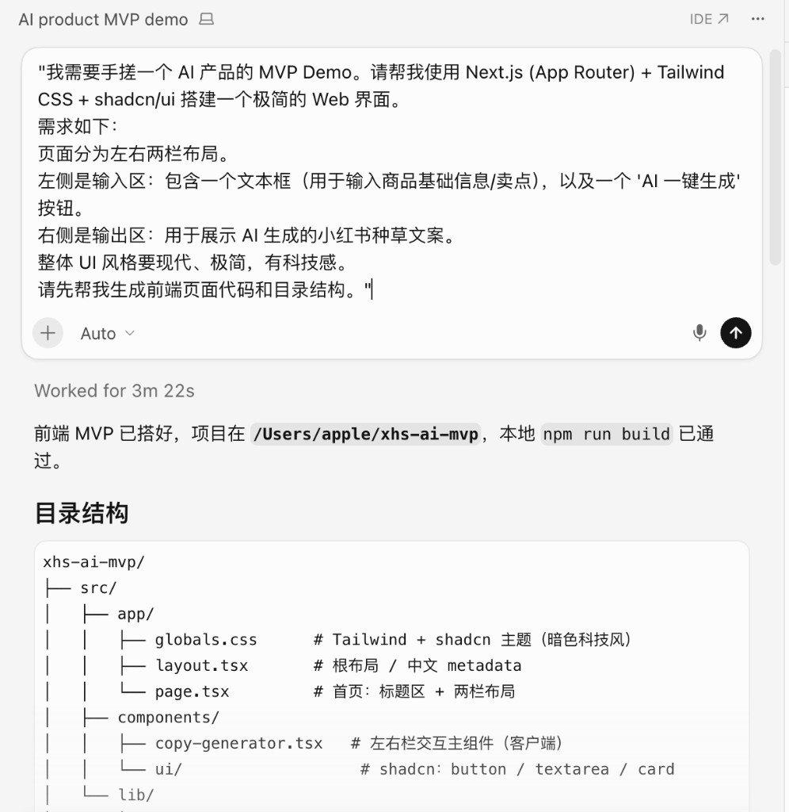
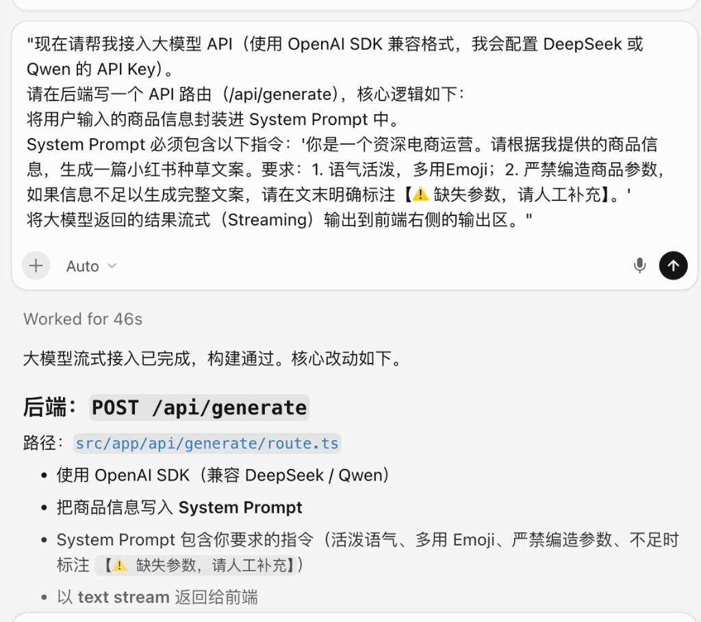
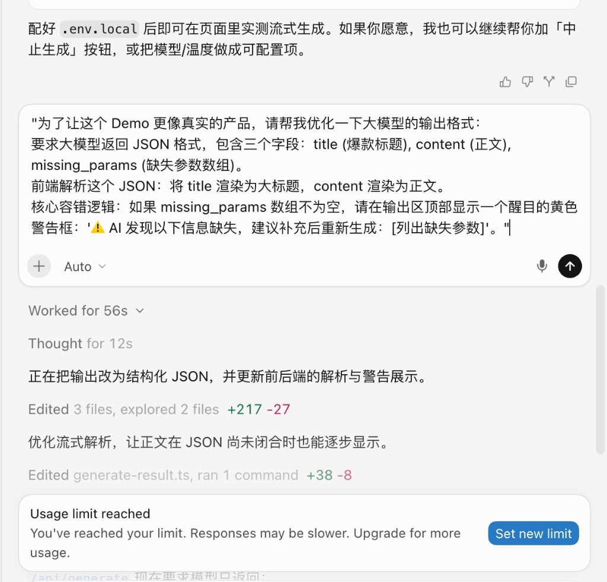

用产品思维指挥 AI，把「种草灵感制造机」从痛点发现做到独立上线。一个拒绝 AI 瞎编、专治“输入困难症”的小红书文案生成器案例。
下面三张是当时真实的 Cursor 对话截图，按时间顺序：先定界面骨架，再接通流式接口，最后把输出收成 JSON 与缺失提醒。它们要证明的是产品判断和工程指令是否写清楚，而不是「AI 替我写了代码」。



对应到产品决策上，完整路径是这样走的：
演示与源码： xhs-ai-mvp.vercel.app · GitHub